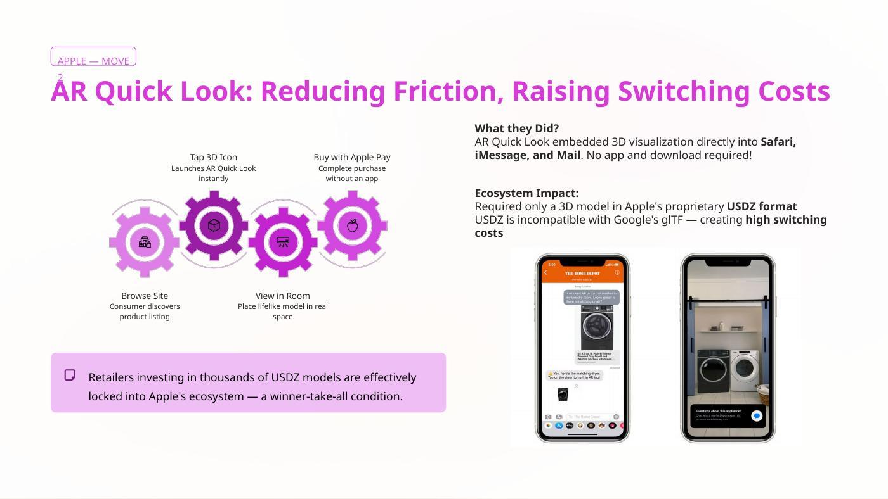
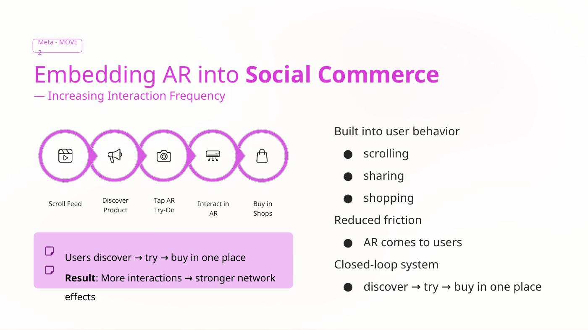

The answer
Reduce producer friction first, then strengthen the reasons to stay. Apple and Meta already benefit from large installed user bases; the strategic challenge is increasing useful AR supply, improving discovery, and creating differentiated infrastructure or data advantages.
Apple: infrastructure as distribution
ARKit lowered the technical barrier for developers, while Quick Look made AR product visualization available inside the iOS experience. The strategic value is not just the AR feature — it is making Apple the infrastructure layer through which retailers reach a large installed demand side.

Meta: AR inside social commerce
Meta's advantage is different: AR can live where discovery, sharing, and shopping already happen. That increases interaction frequency and lets brands/creators produce the experiences rather than requiring Meta to create all content itself.

The platform mechanism
Recommendations
My contribution
My documented responsibility covered the large platform-owner analysis and recommendations, particularly Apple and Meta. The case study therefore emphasizes those sections rather than claiming the full Snap/Niantic analysis as my individual work.